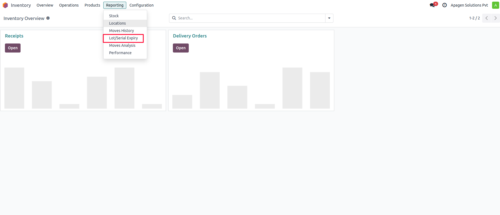
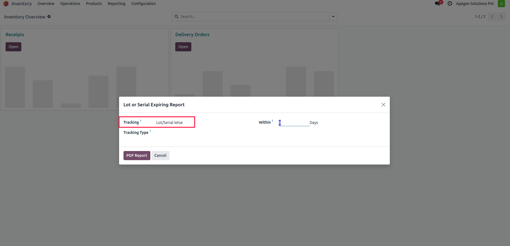
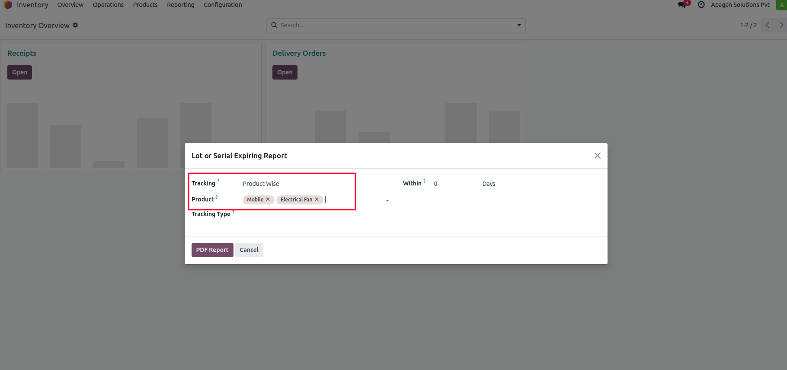

This module allows users to generate detailed PDF reports of product lots or serial numbers based on their expiry dates. It helps in proactive inventory planning, reducing waste, and ensuring quality control.



Navigate to the Product Expiry Report menu. Use the wizard to choose whether to generate the report based on products or lot/serial numbers. You can filter based on expiry type (expired or expiring) and specify a date or number of days. Click Print to generate the PDF report.
Apagen Solutions